먼저 생각해 보세요.
그림에서 개 Milo는 어디에 있나요?
독일어로는 unter dem Bett라고 해요. 이 과에서 배워요.
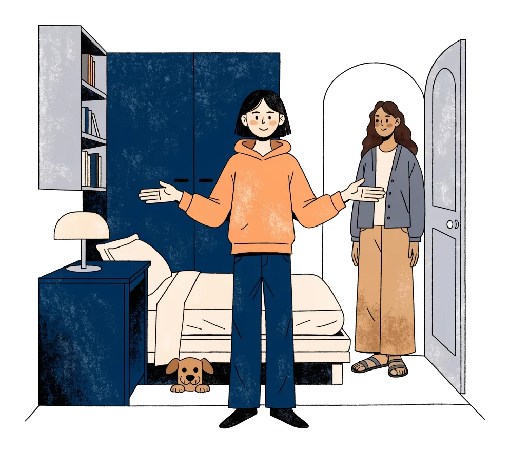
토요일 오후예요. Elif가 처음으로 Yuna의 방에 놀러 왔어요.
눌러서 들어 보세요.
먼저 생각해 보세요.
그림에서 개 Milo는 어디에 있나요?
독일어로는 unter dem Bett라고 해요. 이 과에서 배워요.
문법 es gibt + Akkusativ, Wo? in, auf, unter, neben + Dativ, Adjektive nach sein
이 과를 마치면 내 방에 무엇이 있고 그것이 어디에 있는지 독일어로 말할 수 있어요.
토요일 오후, Elif가 Yuna의 방에 처음 들어와요.
들으면서 찾아보세요. Yuna의 방에는 어떤 가구가 있나요?
월요일 아침이에요. Emma가 학교에 가기 전에 휴대폰을 찾아요.
들으면서 찾아보세요. Emma의 휴대폰은 어디에 있었나요?
두 대화를 듣고 답하세요.
Yunas Zimmer ist groß.
작지만 아늑해요. Es ist klein, aber gemütlich.
Die Bücher sind im Regal.
Milo는 어디에 있나요?
Emma의 휴대폰은 어디에 있었나요?
Emma는 오늘 무엇을 해야 하나요?
낱말 25개예요. 낱말이나 예문 앞의 단추를 누르면 소리가 나요. 명사는 der, die, das를 색으로 구분했어요.
die Wohnung, die Wohnungen 집 (아파트처럼 한 층에 있는 집)
Die Wohnung ist groß.그 집은 커요.
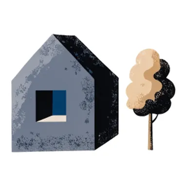
das Haus, die Häuser 집, 주택
Das Haus ist alt, aber schön.그 집은 오래됐지만 예뻐요.
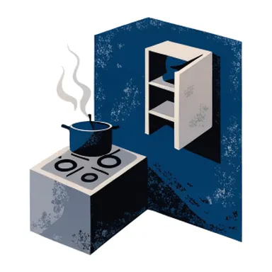
die Küche, die Küchen 부엌
Thomas kocht in der Küche.Thomas는 부엌에서 요리해요.
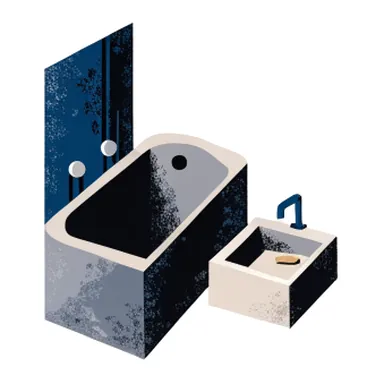
das Bad, die Bäder 욕실
Das Bad ist klein.욕실은 작아요.
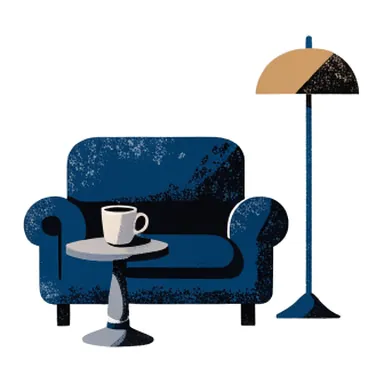
das Wohnzimmer, die Wohnzimmer 거실
Im Wohnzimmer gibt es ein Sofa.거실에는 소파가 있어요.
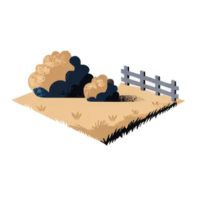
der Garten, die Gärten 정원
Milo spielt im Garten.Milo는 정원에서 놀아요.
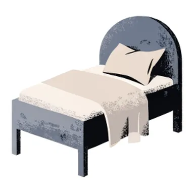
das Bett, die Betten 침대
Das Bett ist neu.그 침대는 새것이에요.
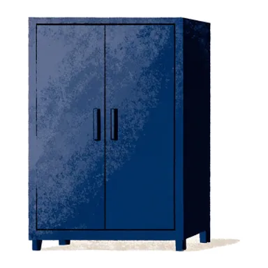
der Schrank, die Schränke 옷장, 장
Die Tasche ist im Schrank.가방은 옷장 안에 있어요.
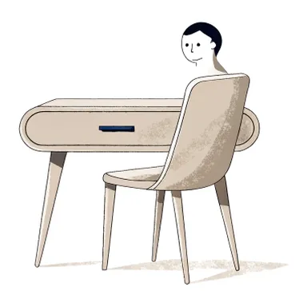
der Schreibtisch, die Schreibtische 책상
Das Heft ist auf dem Schreibtisch.공책은 책상 위에 있어요.
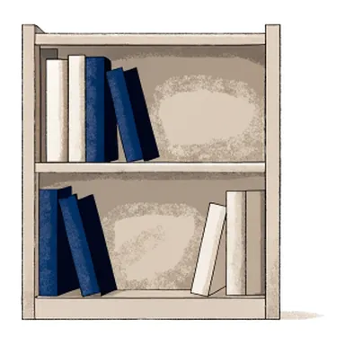
das Regal, die Regale 선반, 책장
Die Bücher sind im Regal.책은 책장에 있어요.
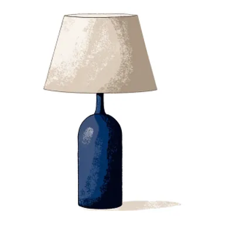
die Lampe, die Lampen 등, 램프
Die Lampe ist neben dem Bett.램프는 침대 옆에 있어요.
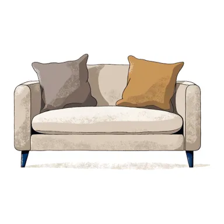
das Sofa, die Sofas 소파
Milo schläft auf dem Sofa.Milo는 소파 위에서 자요.
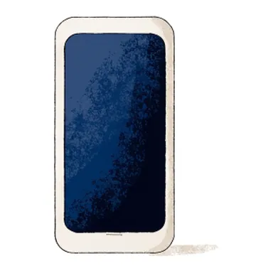
das Handy, die Handys 휴대폰
Wo ist mein Handy?내 휴대폰 어디 있지?
groß 큰
Das Wohnzimmer ist groß.거실은 커요.
klein 작은
Mein Zimmer ist klein.내 방은 작아요.
hell 밝은
Die Küche ist hell.부엌은 밝아요.
dunkel 어두운
Das Bad ist dunkel.욕실은 어두워요.
gemütlich 아늑한, 편안한
Das Sofa ist gemütlich.그 소파는 편안해요.
schön 예쁜, 좋은
Dein Zimmer ist schön.네 방 예쁘다.
es gibt ~이 있다
Im Zimmer gibt es einen Schrank.방에는 옷장이 있어요.
suchen 찾다
Ich suche mein Handy.나는 휴대폰을 찾고 있어요.
in ~ 안에
Das Heft ist in der Tasche.공책은 가방 안에 있어요.
auf ~ 위에
Das Handy ist auf dem Tisch.휴대폰은 탁자 위에 있어요.
unter ~ 아래에
Der Hund ist unter dem Bett.개는 침대 밑에 있어요.
neben ~ 옆에
Der Stuhl ist neben dem Schrank.의자는 옷장 옆에 있어요.
이 과의 낱말로 여덟 문제를 풀어요.
예문을 보고 답해 보세요.
es gibt 뒤에 der Schreibtisch가 오면 ein은 어떻게 되나요?
규칙
es gibt는 '~이 있다'는 뜻이에요. haben처럼 뒤에 4격(Akkusativ)이 와요. der 명사 앞에서는 einen, keinen이 되고, die와 das 명사 앞에서는 그대로예요. 물건이 여러 개여도 es gibt는 바뀌지 않아요.
| der Schrank | das Bett | die Lampe | |
|---|---|---|---|
| Es gibt … | einen Schrank | ein Bett | eine Lampe |
| Es gibt … (없음) | keinen Schrank | kein Bett | keine Lampe |
주의 장소를 문장 맨 앞에 두면 동사 gibt가 둘째 자리에 오고 es는 그 뒤로 가요. Im Zimmer gibt es ein Bett.
예문을 보고 답해 보세요.
die Tasche 앞에서 die는 무엇으로 바뀌었나요?
규칙
어디에 있는지(Wo?) 말할 때는 in, auf, unter, neben 뒤의 관사가 바뀌어요. 이 모양을 3격(Dativ)이라고 해요. der와 das는 dem이 되고, die는 der가 돼요. in dem은 줄여서 im이라고 해요.
| der Schrank | das Regal | die Tasche | |
|---|---|---|---|
| in 안에 | im Schrank | im Regal | in der Tasche |
| auf 위에 | auf dem Schrank | auf dem Regal | auf der Tasche |
| unter 아래에 | unter dem Schrank | unter dem Regal | unter der Tasche |
| neben 옆에 | neben dem Schrank | neben dem Regal | neben der Tasche |
주의 die가 der로 바뀌는 것이 낯설어요. in der Küche, in der Tasche, neben der Tür처럼 자주 쓰는 말을 덩어리로 외워 두세요.
예문을 보고 답해 보세요.
sein 뒤에 오는 형용사는 명사에 따라 모양이 바뀌나요?
규칙
sein 뒤에 오는 형용사는 명사가 der, die, das 가운데 무엇이든 모양이 바뀌지 않아요. 앞에 sehr, nicht, zu를 붙여 정도를 말해요.
| 낱말 | 뜻 | 예문 |
|---|---|---|
| sehr | 아주 | Das Zimmer ist sehr hell. |
| nicht | ~지 않은 | Das Bad ist nicht groß. |
| zu | 너무 | Der Schrank ist zu klein. |
주의 물건을 다시 가리킬 때도 der 명사는 er, die 명사는 sie, das 명사는 es로 받아요. Wo ist das Handy? – Es ist auf dem Sofa.
Lukas가 자기 방을 소개해요. 듣고 답하세요.
Mein Zimmer
Lukas Das ist mein Zimmer. Es ist nicht groß, aber es ist hell.
Lukas Es gibt ein Bett, einen Schreibtisch und einen Schrank.
Lukas Auf dem Schreibtisch ist mein Computer.
Lukas Mein Fußball ist unter dem Bett. Und neben dem Bett schläft die Katze.
Lukas의 방은 어떤가요?
Was gibt es im Zimmer?
Wo ist der Fußball?
고양이는 어디에서 자나요?
듣고 물건이 어디에 있는지 고르세요.
휴대폰은 어디에 있나요?
Das Handy ist in der Tasche.
Milo는 어디에 있나요?
Milo ist auf dem Sofa.
램프는 어디에 있나요?
Die Lampe ist neben dem Bett.
공은 어디에 있나요?
Der Ball ist unter dem Tisch.
집 광고를 읽고 답하세요.
Wohnung in Köln
3 Zimmer, Küche, Bad. Die Wohnung ist groß und hell.
Das Wohnzimmer ist sehr schön. Die Küche ist klein, aber neu.
Im Bad gibt es ein Fenster.
Es gibt keinen Garten. Aber der Park ist neben dem Haus!
Die Wohnung ist dunkel.
Die Wohnung ist groß und hell.
Die Küche ist neu.
Was gibt es nicht?
Wo ist der Park?
es gibt 뒤에 알맞은 말을 고르세요.
Im Zimmer gibt es Schrank.
Es gibt Bett.
In der Küche gibt es Lampe.
Hier gibt es Garten.
Im Wohnzimmer gibt es Sofa.
Es gibt Schreibtisch.
dem과 der 가운데 알맞은 말을 고르세요.
Das Handy ist auf Tisch.
Die Bücher sind in Tasche.
Milo schläft unter Bett.
Die Lampe ist neben Sofa.
Thomas ist in Küche.
Der Stift ist unter Stuhl.
한국어 뜻에 맞는 말을 고르세요.
Die Bücher sind Regal.
책은 책장에 있어요.
Der Hund schläft dem Bett.
개가 침대 밑에서 자요.
Das Heft ist der Tasche.
공책은 가방 안에 있어요.
Die Lampe ist dem Schreibtisch.
램프는 책상 위에 있어요.
Der Stuhl ist dem Schrank.
의자는 옷장 옆에 있어요.
뜻이 반대인 낱말끼리 짝지으세요.
낱말을 순서대로 눌러 문장을 만드세요.
내 방은 작아.
방에는 옷장이 있어.
휴대폰은 소파 위에 있어.
내 휴대폰 어디 있어?
듣고 그대로 써 보세요.
Das ist mein Zimmer. 여기가 내 방이야.
Die Bücher sind im Regal. 책은 선반에 있어.
Wo ist mein Handy? 내 휴대폰 어디 있지?
Das ist mein Zimmer. 여기가 내 방이야.
Es gibt ein Bett und einen Schrank. 침대와 옷장이 있어.
Mein Zimmer ist klein, aber gemütlich. 내 방은 작지만 아늑해.
Wo ist …? …은 어디 있어?
Auf dem Tisch. / Im Regal. 탁자 위에. / 선반에.
Unter dem Bett. / Neben der Lampe. 침대 밑에. / 램프 옆에.
Dein Zimmer ist sehr hell. 네 방은 아주 밝다.
Das Wohnzimmer ist zu klein. 거실이 너무 작아.
대화 B에서 역할을 하나 고르세요. 상대의 말은 음성으로 나오고, 내 차례에는 직접 말해요.
내 방이 어떤지, 방에 무엇이 있는지, 휴대폰이 어디에 있는지 적으세요. 완성된 문장을 소리 내어 읽어 보세요.
Das ist mein Zimmer. Es ist klein, aber hell.
Es gibt ein Bett und einen Schreibtisch.
Mein Handy ist auf dem Schreibtisch.
Mein Zimmer
내 방을 소개하는 글을 써 보세요. 다섯 문장쯤이면 충분해요.
Mein Zimmer ist klein, aber hell. Es gibt ein Bett, einen Schreibtisch und ein Regal. Die Bücher sind im Regal. Mein Handy ist auf dem Schreibtisch. Die Lampe ist neben dem Bett. Ich finde mein Zimmer gemütlich.
다 쓴 뒤에 확인해 보세요.
Ich kann mein Zimmer beschreiben.내 방을 묘사할 수 있어요.
Ich kann sagen, wo etwas ist.물건이 어디에 있는지 말할 수 있어요.
Ich kann sagen, wie ich ein Zimmer finde.방에 대한 느낌을 말할 수 있어요.